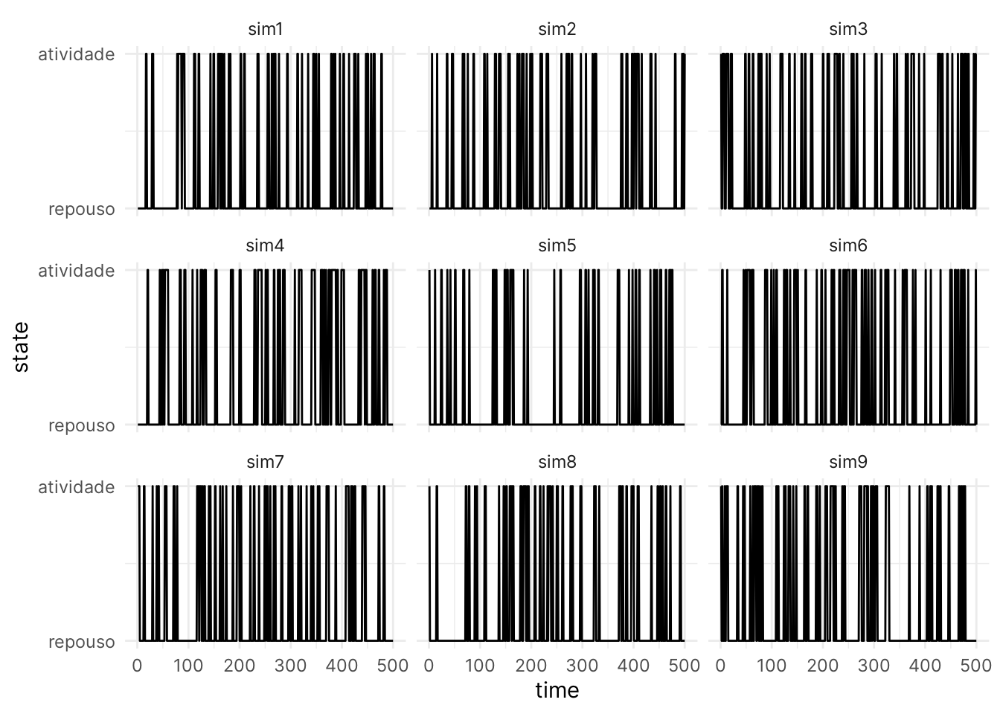
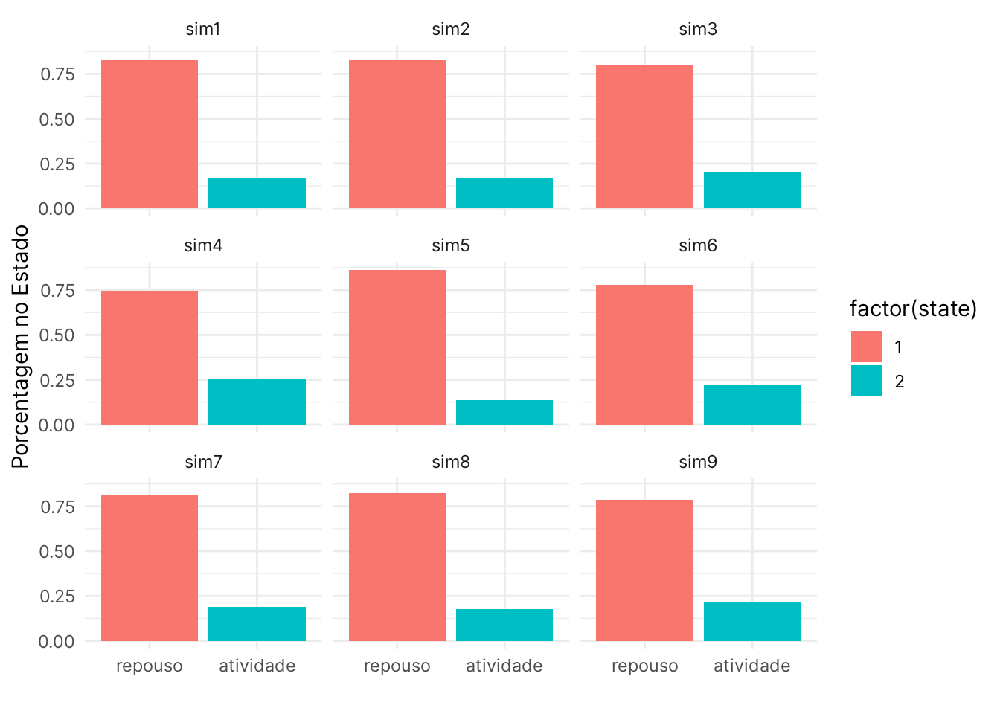

Para simularmos uma cadeia de Markov precisamos definir nossa matriz de transição. Essa matriz mostra as probabilidades de transições entre os estados. As linhas da matriz representam o estado atual e as colunas o próximo estado na cadeia. Vamos simular as transições entre repouso e atividade de um animal, assumindo que esse animal é arritmico. Esse animal quando em repouso tende a permanecer em repouso 90% das vezes. Agora, se esse animal está em atividade a chance dele entrar em repouso ou permanecer em atividade é a mesma: 50%. Com esses dados, nossa matriz de transição fica assim:
states = c("repouso", "atividade")
(transition_matrix = matrix(c(0.9, 0.1, 0.5, 0.5), byrow = T, nrow = 2, dimnames = list(states,states)))## repouso atividade
## repouso 0.9 0.1
## atividade 0.5 0.5O próximo passo é simular as mudanças de estado a partir de um estado inicial. Para isso vamos definir também uma matriz 1x2 com as probabilidades do sistema começar em cada um dos estado. Nesse exemplo a probabilidade do animal iniciar em atividade ou repouso é a mesma, 50% para cada.
(initial_prob = matrix(c(0.5, 0.5), nrow = 1, dimnames = list(c(),states)))## repouso atividade
## [1,] 0.5 0.5Com essas probabilidades inicias e a matriz de transição podemos simular algumas cadeias de Markov. Vamos simular 9 cadeias de Markov com 500 transições cada. Cada transição é correspondente a uma unidade de tempo em que estamos coletando os dados, o que poderia corresponder a minutos ou horas dependendo do tipo de coleta.
set.seed(53)
# Quantas simulações e probabilidades iniciais
nchains = 9
niter = 500
# Function that simulates a Markov Chain given a
# vector containing the starting state in position 1
markov_chain_sim = function(transition_matrix, initial_prob, niter = 50){
nstates = nrow(transition_matrix)
chain = numeric(niter)
#Sorteia os estados iniciais de acordo com a matriz de prob.
chain[1] = sample(1:nstates, 1, prob = t(initial_prob))
for(t in 2:niter){
chain[t] = sample(1:nstates, 1, prob = transition_matrix[chain[t-1],])
}
return(chain)
}
#' Criando uma matrix que conterá todas simulações
#' Cada coluna é uma simulação diferente.
#' O número de linhas corresponde à quantidade de transições que queremos simular
sim = matrix(NA, niter, nchains)
colnames(sim) = paste0("sim", 1:nchains)
# Repetimos a função markov_chain_sim para cada coluna
for(i in 1:nchains){
sim[,i] = markov_chain_sim(transition_matrix, initial_prob, niter)
}
tail(sim)## sim1 sim2 sim3 sim4 sim5 sim6 sim7 sim8 sim9
## [495,] 1 2 2 1 1 1 1 1 1
## [496,] 1 1 1 1 1 1 1 1 1
## [497,] 1 2 1 1 1 1 1 1 1
## [498,] 1 2 1 1 1 1 1 1 1
## [499,] 1 1 2 1 1 2 1 1 1
## [500,] 1 2 2 1 1 1 1 1 1Vamos plotar esses os resultados de algumas simulaçoes para entendermos como o sistema está mudando no tempo. Podemos ver no gráfico abaixo que pela Cadeia de Markov ser um processo estocástico nenhuma das simualções é igual a outra.
library(ggplot2)
library(tidyr)
library(dplyr)##
## Attaching package: 'dplyr'## The following objects are masked from 'package:stats':
##
## filter, lag## The following objects are masked from 'package:base':
##
## intersect, setdiff, setequal, unionsim_df = pivot_longer(data.frame(time = 1:nrow(sim), sim), cols = 2:(ncol(sim)+1), names_to = "sim", values_to = "state")
ggplot(sim_df) +
geom_line(aes(x = time, y = state)) +
scale_y_continuous(breaks = unique(sim_df$state), labels = states) +
facet_wrap(vars(sim)) +
theme_minimal() Ou seja, não é possível prever com certeza o que acontecerá no futuro dado que temos em qual estado o animals começou seu registro. Porém existem algumas propriedades estatísticas importantes. Porém, o que é interessante é que se calcularmos a proporção de repouso e atividade sobre o total de observações, que no nosso caso são 500, vamos obter um resultado muito próximo entre as simulações.
sim_perc = sim_df %>%
group_by(sim, state) %>%
summarise(perc = n()/niter)## `summarise()` has grouped output by 'sim'. You can override using the `.groups` argument.head(sim_perc)## # A tibble: 6 × 3
## # Groups: sim [3]
## sim state perc
## <chr> <dbl> <dbl>
## 1 sim1 1 0.83
## 2 sim1 2 0.17
## 3 sim2 1 0.828
## 4 sim2 2 0.172
## 5 sim3 1 0.796
## 6 sim3 2 0.204Essa tabela num gráfico de barras ficas assim:
ggplot(sim_perc, aes(y = perc, x = factor(state), fill = factor(state))) +
geom_bar(stat = "identity") +
scale_x_discrete(breaks = unique(sim_df$state), labels = states) +
facet_wrap(vars(sim)) +
theme_minimal() +
xlab("") +
ylab("Porcentagem no Estado")
O fato das simulações se estabilizarem em certas proporções não é uma coindicência. Essa era justamente a propriedade que Markov queria demonstrar. Dado algumas condições para a cadeia e um número de observações suficientes as proporções vão se estabilizar ao redor de algum valor mesmo que as observações não sejam totalmente independentes entre si.
Ao invés de simularmos uma sequência de transições e só depois calcularmos as proporções dos estados podemos fazer isso com matrizes. Para isso multiplicamos a matriz de transição pela matriz de probabilidades iniciais. O resultado é então multiplicado pela matriz de transição. Esse processo é repetido até o número de iterações, ou tempo, que queremos que a cadeia tenha.
niter = 500
step = initial_prob %*% transition_matrix
for (i in 1:niter){
step = step %*% transition_matrix
}
step## repouso atividade
## [1,] 0.8333333 0.1666667# sim_prop = data.frame(x = 1:niter, y = apply(sim, 1, function(x){sum(x == 1)/nchains}))
#
# ggplot(sim_prop, aes(x, y)) +
# geom_line() +
# labs(x = "Iteration",
# y = "Prop.") +
# theme_minimal(base_size = 16)